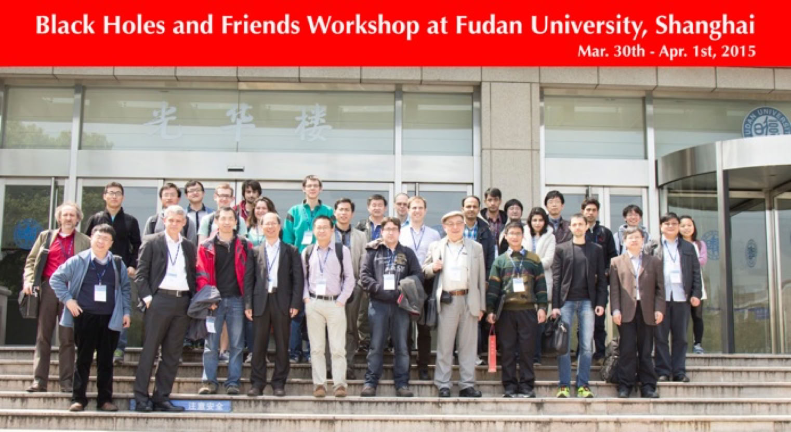

Black Holes and Friends
30 March-1 April 2015, Fudan University (Shanghai, China)

Black holes and relativistic stars are among the most fascinating objects in the Universe and they attract the interest of both physicists and astrophysicists. The workshop will bring together theorists, observers, and experimentalists. The program will include invited talks, contributed talks, and time for free discussions.
Invited Speakers:
Denis Bastieri (Padua & INFN)
Heino Falcke (Nijmegen)
Lijun Gou (NAOC)
Matteo Guainazzi (ESA)
Vladimir Karas (Astronomical Institute)
Youjun Lu (NAOC)
Jian-Min Wang (IHEP)
Zhongxiang Wang (SHAO)
Qingwen Wu (HUST)
Xue-Bing Wu (PKU)
Xuefeng Wu (PMO)
Wenfei Yu (SHAO)
Ye-Fei Yuan (USTC)
Organizers:
Cosimo Bambi (Fudan), Chair
Yifan Cheng (Fudan)
Masoumeh Ghasemi Nodehi (Fudan)
Zilong Li (Fudan)
Dan Liu (Fudan)
Guancheng Pei (Fudan)
Program
March 30 (Monday)
09:30-09:45 Registration
09:45-10:00 Opening remarks
Session 1
10:00-10:50 Lijun Gou (NAOC). Talk: “Overall review to the stellar-black spin measurement” (40 min + discussion)
10:50-11:40 Zhongxiang Wang (SHAO). Talk: “Millisecond pulsar binaries at transition” (40 min + discussion)
12:00-14:00 Lunch
Session 2
14:00-14:50 Matteo Guainazzi (ESA). Talk: “Observational constraints on the distribution of AGN BH spin in the local Universe” (40 min + discussion)
14:50-15:40 Jiachen Jiang (Fudan). Talk: “Testing astrophysical black hole candidates” (40 min + discussion)
15:40-16:10 Coffee break
Session 3
16:10-17:00 Ye-Fei Yuan (USTC). Talk: “Black holes with high accretion rates: theories and observations” (40 min + discussion)
17:00-17:50 Youjun Lu (NAOC). Talk: “Relativistic dynamics around the massive black hole in the Galactic center: prospects on testing the Kerr metric and general relativity” (40 min + discussion)
March 31 (Tuesday)
Session 4
09:15-10:05 Xue-Feng Wu (PMO). Talk: “Black hole candidates in Gamma-Ray Bursts” (40 min + discussion)
10:05-10:55 Jian-Min Wang (IHEP). Talk: “Super-Eddington accreting AGNs in local Universe” (40 min + discussion)
10:55-11:20 Jithesh Vadakkumthani (SHAO). Talk: “A new X-ray transient in NGC 55” (20 min + discussion)
11:20-11:45 Shangyu Sun (Fudan). Talk: “A Day-by-Day Characterization of the Broadband Emission from the SMBH Jet: Blazar Markarian 421” (20 min + discussion)
12:00-14:00 Lunch
Session 5
14:00-14:50 Heino Falcke (Nijmegen). Talk: “Towards Imaging the Event Horizon in the Galactic Center” (40 min + discussion)
14:50-15:40 Wenfei Yu (SHAO). Talk: “Towards the Understanding of the Black Hole Low Frequency QPOs” (40 min + discussion)
15:40-16:10 Coffee break
Session 6
16:10-17:00 Vladimir Karas (Astronomical Institute). Talk: “2D runaway instability of relativistic tori near a magnetized black hole” (40 min + discussion)
17:00-17:50 Qingwen Wu (HUST). Talk: “Radio and X-ray correlation in radiatively inefficient and efficient black holes” (40 min + discussion)
April 1 (Wednesday)
Session 7
09:15-10:05 Xue-Bing Wu (PKU). Talk: “An ultra-luminous quasar with a 12 billion solar mass black hole in the early Universe” (40 min + discussion)
10:05-10:55 Denis Bastieri (Padua & INFN). Talk: “Fermi LAT and Extragalactic Black Holes: Highlights and Perspectives” (40 min + discussion)
10:55-11:20 Yuan Ha (Temple). Talk: “Black hole energy” (20 min + discussion)
11:20-11:45 Dev Raj Sadaula (Tribhuvan). Talk: “Globular stars cluster MUST constitute the black hole at its center” (20 min + discussion)
11:45-12:00 Concluding remarks
12:30-14:00 Lunch
Participant List
Jake Arthur (University of Nottingham, UK)
Rachel Asquith (University of Nottingham, UK)
Cosimo Bambi (Fudan University, China)
Denis Bastieri (Padua University & INFN Padua, Italy)
Yifan Cheng (Fudan University, China)
Heino Falcke (Radboud University Nijmegen, Netherlands)
Lijun Gou (National Astronomical Observatories/CAS, China)
Matteo Guainazzi (European Space Agency, Spain)
Jiachen Jiang (Fudan University, China)
Antoine Fauroux (Fudan University, China)
Masoumeh Ghasemi Nodehi (Fudan University, China)
Yuan Ha (Temple University, US)
Vladimir Karas (Astronomical Institute/CAS, Czech Republic)
Zilong Li (Fudan University, China)
Nan Lin (Fudan University, China)
Dan Liu (Fudan University, China)
Muyun Liu (Fudan University, China)
Youjun Lu (National Astronomical Observatories/CAS, China)
Antonino Marciano’ (Fudan University, China)
Amin Mosallanezhad (Shanghai Astronomical Observatory/CAS, China)
Guancheng Pei (Fudan University, China)
Leslaw Rachwal (Fudan University, China)
Diego Rubiera-Garcia (Fudan University, China)
Dev Raj Sadaula (Tribhuvan University, Nepal)
Shangyu Sun (Fudan University, China)
Naoki Tsukamoto (Fudan University, China)
Jithesh Vadakkumthani (Shanghai Astronomical Observatory/CAS, China)
Jian-Min Wang (Institute of High Energy Physics/CAS, China)
Zhongxiang Wang (Shanghai Astronomical Observatory/CAS, China)
Qingwen Wu (Huazhong University of Science and Technology, China)
Xue-Bing Wu (Peking University, China)
Xuefeng Wu (Purple Mountain Observatory/CAS, China)
Cong Yu (Yunnan Observatories/CAS, China)
Wenfei Yu (Shanghai Astronomical Observatory/CAS, China)
Ye-Fei Yuan (University of Science and Technology of China, China)
Hongsheng Zhang (Shanghai Normal University, China)